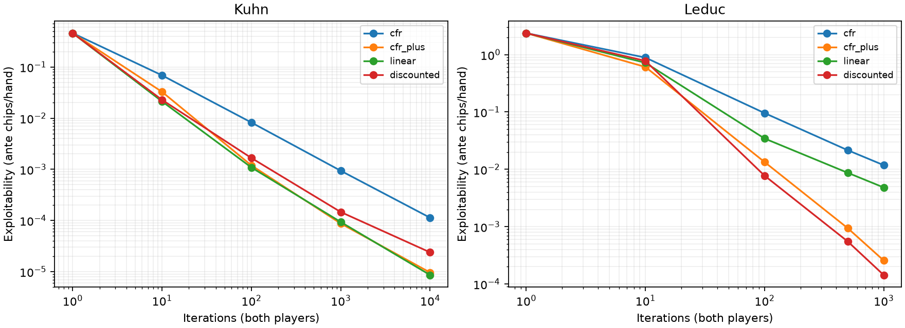
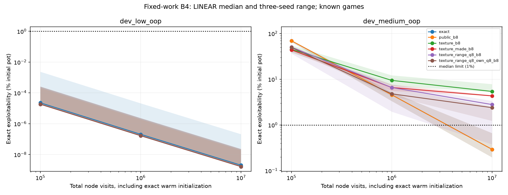
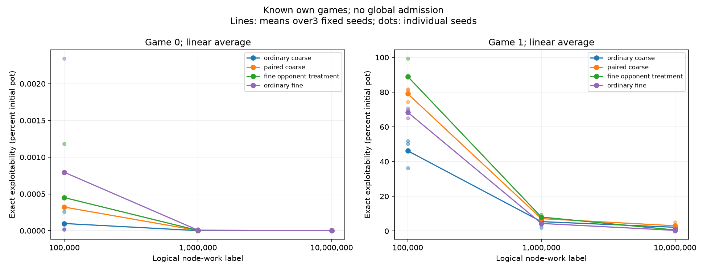
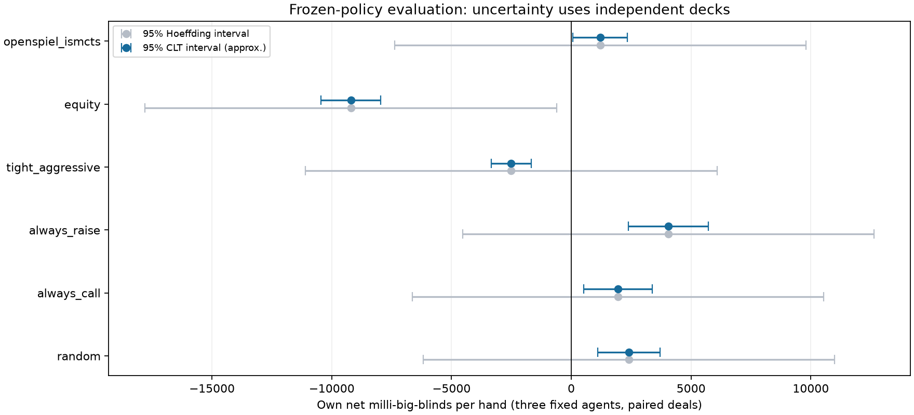

Poker AI: Learning and Evaluating Strategies Under Imperfect Information
I am building a poker AI research system from the cards and game engine upward, with an emphasis on game theory, statistical evaluation, and reproducible experiments. The central question is how to learn useful strategies when a player sees only part of the game state—and how to tell whether a measured improvement is real.
The project now includes a Hold’em engine, counterfactual regret minimization (CFR) solvers, sampled self-play, card and action abstractions, and evaluation tools. Recent work tests compact blocker-aware descriptions, trains coarse learners against finer-information opponents, and traces remaining weaknesses to individual saved decisions.
RepositoryLearning journalExperiment log
Progress snapshot from repository revision 455e6e9. The figures and measurements below come from committed experiment reports. Competitive full-game playing strength has not yet been established.
Building a trustworthy foundation
Strategy results depend on the mechanics beneath them. I implemented card encodings, an immutable deck, hand evaluation, equity calculation, and a two-to-six-seat Hold’em engine, then checked them against independent implementations.
- Five-card evaluation: all 2,598,960 possible hands checked against Treys, with zero disagreements across 7,462 distinct ranks.
- Best-five selection: two million seeded six- and seven-card hands checked against Treys, with zero disagreements. These are sampled checks rather than exhaustive coverage.
- Game mechanics: 1,000 seeded independent traces covering 10,039 actions and 471 side-pot hands, with no unexplained mismatches within the documented comparison scope.
The engine checks shared actions and rational terminal shares; differences involving short blinds, short raises, free folds, and integer rounding are documented explicitly. Engine validation and scope.
Learning strategies through self-play
CFR updates a strategy using the regret associated with actions it could have taken. Repeated self-play produces an average strategy; sampled variants reduce the cost of traversing the game tree. I implemented exact CFR, CFR+, Linear CFR, and Discounted CFR, followed by external- and outcome-sampling methods.
On the smaller Kuhn and Leduc poker games, matched-iteration exploitability agreed with OpenSpiel to a maximum discrepancy of 1.39 × 10−16 ante chips per hand. These comparisons validate the solver implementation on those games. OpenSpiel supplies independent comparison values; its strategies are not used to train my learners.
Exploitability measures how much an optimal counterstrategy can gain against a saved strategy. The reports use NashConv/2; restricted Hold’em studies normalize it by the initial pot. Lower values are better. This metric is different from a win rate against a particular opponent.

A later procedure check froze the training method and inputs before separately training four fresh restricted turn–river games. All four met the declared final accuracy and average-coverage limits at ten million node-work; the closest case reached median exploitability of 0.9670% of the pot against a 1% median limit. Each game had only two physical combinations per seat and three fixed training seeds. This tests the procedure across new small games, rather than one policy generalizing to unseen boards. Frozen protocol and results.
A compact, blocker-aware description
A poker abstraction groups situations under shared strategy entries. The challenge is retaining the distinctions that change the best action. My earlier coarse texture and made-hand descriptions lost important information about relative hand strength and blockers—the cards that remove possible hands from a player’s range.
The latest candidate adds a compact description of how public cards remove hands from my own possible range, alongside the existing opponent-range features. It encodes this own-range removal and hand-category information in a 30-bit river word. The feature uses public information and declared ranges; it does not reveal the opponent’s hidden hand.
At 4,096 full-tree CFR+ iterations, the compact candidate passed its declared full-control accuracy criteria in both known turn games. In the medium game it reached similarly low exploitability to the exact control with 1,770 strategy rows, compared with 3,336 raw-public rows. The longer key strings mean that fewer rows do not establish a total-memory saving.
| Representation | Exploitability | Strategy rows |
|---|---|---|
| Exact / raw public | 0.00018229% | 3,336 |
| Opponent-range features | 0.27164015% | 1,662 |
| Compact blocker-aware candidate | 0.00017718% | 1,770 |
All 72 saved full-control policies passed the recorded replay and independent OpenSpiel value and both-player best-response checks. Full-control methods · Complete results.
Does that accuracy survive sampled learning?
The fixed-work comparison tests six representations on both known games, retaining three declared seeds and final linear-average policies. At ten million charged node visits, the compact learner’s medium-game median was 2.389912% of the pot and its worst seed was 2.494568%. The median exceeds the preset 1% limit, so the candidate fails the accuracy gate even though its worst seed is below 2.5%.
| Representation | Median exploitability | Worst seed |
|---|---|---|
| Exact / raw public | 0.292420% | 0.660690% |
| Coarse texture | 5.408578% | 7.794681% |
| Texture + made-hand category | 4.319132% | 4.463153% |
| Opponent-range features | 2.793292% | 3.349472% |
| Compact blocker-aware candidate | 2.389912% | 2.494568% |

This separates representational capacity from learning performance: the same compact description supports a low-exploitability full-control strategy, but the sampled procedure has not reached that quality at its allotted work. These are separately trained, restricted development games; the global agent’s default remains unchanged.
Learning against finer-information opponents
A complementary experiment keeps a coarse learner’s information groups unchanged while training it against an opponent that can distinguish finer legal states. Both sides are my own learners. A paired coarse control uses the same split-work design to make the comparison more informative than ordinary self-play alone.
| Training method | Mean exploitability |
|---|---|
| Ordinary coarse self-play | 2.172684% |
| Paired coarse control | 3.028358% |
| Finer-opponent treatment | 0.597028% |
| Ordinary fine self-play | 0.382574% |
The treatment’s medium-game median and worst seed were 0.553162% and 1.035519%, within the original 1% and 2.5% accuracy limits. Two seeds improved and one worsened. The overall predeclared superiority gate still failed because median improvement in the already-near-zero low game was zero, rather than strictly positive. This earlier treatment did not use the new compact blocker-aware description.

Tracing the compact learner’s remaining weakness
The latest saved-policy analysis holds each opponent fixed and separates response gains possible within the existing information groups from gains available with finer legal information. For the medium compact sampled strategies, mean exploitability is approximately 2.037% of the pot: 0.117 percentage points within the groups and 1.920 points from finer information. This mean differs from the 2.390% median used by the acceptance test above.
The finer-information benefit depends on the saved opponent; it is largely hidden against the full-control opponent. All 144 crossed joint profiles and 288 player responses passed the recorded independent checks. A subsequent trace follows the benefit to individual hands: all three compact sampled seeds identify the same turn call with 9♣ 9♦. That row has no turn-state collision; its value depends on finer future decisions. This is a diagnosis of saved policies, not evidence that a new feature or training change has already solved the problem.
Fixed-opponent diagnosis · Individual-decision trace.
Current work
A planned compact/finer-opponent training follow-up has passed its software rehearsal, but its independent-verification cost forecast exceeded the fixed compute budget, so no new real training began. Profiling the complete replay identified repeated perfect-recall validation as its largest exclusive Python cost. The next engineering question is whether validated structure can be reused while still detecting mutations and preserving all rejection checks.
Follow-up status · Replay profiling and limits. The profile is verification evidence; it establishes neither a speedup nor a new strategy-strength result.
Evaluating matches without overstating strength
The earlier frozen-agent evaluation contains 36,000 simulated hands against six fixed opponents using three frozen training seeds. It reuses 1,000 independently drawn decks across both seats and policies to reduce variance. The independent statistical units are the deck clusters, not all 36,000 hands.

The project also includes Bayesian opponent models on toy games and conditional bankroll-risk studies. These extend the statistical analysis without establishing a positive real-world poker edge. Current gameplay work uses simulation and permitted public bot benchmarks.
Each study retains its inputs, seeds, frozen policies, checks, and report-generation commands. The linked repository tracks ongoing progress beyond this snapshot; the learning journal explains how the questions and experiments developed.